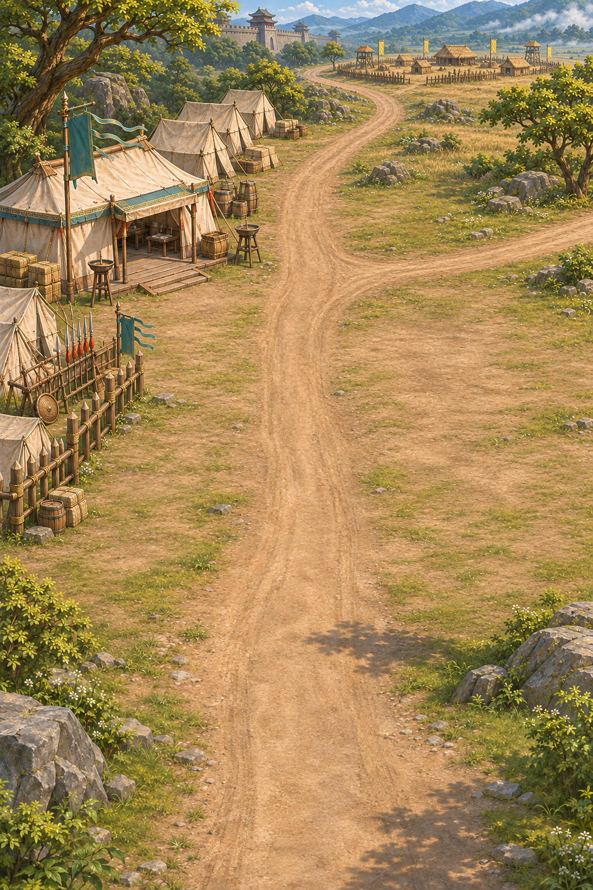

漢軍會師攻略
已接入：陶謙引薦、廣宗接應、長社解圍、驛道送別與南陽軍情。宛城討伐尚未開放。這是遊戲改編劇情，並非嚴格歷史行軍年表。
完成初戰黃巾 → 再找陶謙 → 拜會盧植 → 廣宗接應 → 長社會師 → 長社解圍 → 驛道送別盧植 → 朱儁南下 → 南陽軍情。
徐州出發
初戰黃巾向陶謙完整覆命後，再談一次取得引薦。徐州出口可前往盧植軍營。
展開完整對話
陶謙：官道得以重通，百姓總算能安心往來。只是黃巾遍起，一地得安，還不是天下得安。
劉備：備昔年曾受業於盧子幹先生。聞先生領兵討賊，願率義勇前往效力，也問一問平亂之策。
陶謙：盧中郎將正在北方用兵。我備一封引薦文書，說明諸位在徐州救護百姓、疏通官道之功。
關羽：我等兵少，到了軍前，更當聽令行事。
張飛：只要能護住百姓，俺這桿蛇矛，走到哪裡都使得！
陶謙：此去路遠，先整頓人馬，再行啟程。願諸位平安。
盧植軍營與廣宗接應
先拜會盧植，再向傳令兵問路。廣宗外圍交談後可開始四波接應戰，第二波前盧植援軍到達。首勝200金幣；回場景看車隊入營，再回盧植處領受軍情書，開長社。
展開完整對話
劉備：學生劉備，拜見先生。
盧植：玄德？多年不見，你已能領兵奔走了。陶使君信中提到，你們先救護軍，再追糧車，可有此事？
劉備：糧可再籌，人命難回。學生只是不忍見傷者困在賊中。
盧植：這個念頭，要一直記住。領兵之人，不能只計斬獲，也要知道自己守的是誰。
劉備：學生願聽先生調遣。
盧植：廣宗外圍尚有散賊阻路，一隊鄉民與運傷兵的車輛未能入營。你領本部守住接應口，我帶一隊軍士接你。不許貪功追遠。
關羽：守口接人，待車隊入營，再依令收兵。
盧植：正是。去向傳令兵問清道路再動身。
傳令兵：沿營外北路到木柵缺口，車隊會從側道過來。賊人常從林邊截斷後隊，請守住岔口。
劉備：傷者與鄉民先過，我們斷後。
傳令兵：中郎將的接應部隊隨後便到。準備妥當，就由上方道路出營。
接應軍士：車隊就在側道！前頭有傷兵，後頭還跟著幾戶逃難的人家，走不快。
劉備：請他們依次過路，不要擠。賊人若來，我們守住此處。
接應軍士：中郎將已分兵來援，將軍現在接應嗎？
劉備：先生，鄉民與傷兵已全數接回。學生未追散賊。
盧植：很好。能進，也要能止，才帶得住一支兵。
盧植：潁川方面亦在苦戰。你帶我的軍情書去長社，交給皇甫義真、朱公偉二位將軍。說明北路賊勢，聽他們調遣。
劉備：學生領命。願先生保重。
盧植：此去切記：軍功不必獨取，百姓不可輕棄。
長社營地與側翼
先遞書給皇甫嵩，再聽朱儁分派。軍需行囊可領解毒散1份。側翼六波戰：朱儁初始可部署，皇甫嵩第四波前抵達。首勝300金幣。勝利回場景向皇甫嵩回報，開驛道並可回營領硬皮甲1件。
展開完整對話
劉備：劉備奉盧中郎將之命，送來北路軍情。
皇甫嵩：你便是子幹的學生？書中說你領的是鄉勇，卻能守令護民，難得。
劉備：只盼能為平亂盡一分力。眼下賊勢如何？
皇甫嵩：波才人多，卻依草結營。天乾風起，正可借勢破之。但火起之時，我軍出擊的側路不能被截斷。
皇甫嵩：你去找朱將軍，與他守住側翼。我待時機率部出擊，你們接住反撲，再收攏散兵。
朱儁：盧中郎將薦來的人，我信得過。但賊軍人多，臨陣切莫只看眼前幾個潰兵。
劉備：請將軍示下。
朱儁：我與你守側翼，先擋住壓來的前隊。待皇甫將軍舉火出擊，再接住敗兵的衝撞。未奉號令，不得離開守點。
關羽：敵陣一亂，反而更須穩住我軍。
朱儁：正是。讓軍需吏備好傷藥，整隊後來側翼會合。
軍需吏：朱將軍吩咐，給接應的弟兄備一份解毒散。營外草木叢雜，留著有用，莫要隨手丟了。
朱儁：前隊壓來了。玄德，守穩這條路，今夜能否接應大軍，就看這裡。
劉備：義勇已整隊，請將軍下令。
軍士（第 4 波前）：賊營起火了！皇甫將軍正往這裡進兵！
皇甫嵩：側翼已穩，諸軍隨我接應！莫追散卒，先截敵勢！
朱儁：玄德，接住這一陣，不能讓他們衝散我軍！
皇甫嵩：火攻得手，還須有人守住歸路。這一戰，你們接應得好。
劉備：是二位將軍調度有方。傷者尚在後頭，容備先安排人手照應。
朱儁：我已遣人收治。這幾日先整頓兵馬，追擊自有軍令，不可各自為戰。
皇甫嵩：北路消息未明，子幹那裡仍需留意。你若派人探問，記得帶回確訊，不要盡信傳聞。
驛道送別與南陽軍情
驛道遇盧植被押解；對話後回長社找朱儁，才開南陽。到南陽聽完軍情，完成漢軍會師。宛城軍情字卡提供後續提醒，宛城戰鬥與勸降書支線尚未開放。
展開完整對話
劉備：先生！這是怎麼回事？
盧植：朝廷追問軍情，我須回京受訊。軍前之事，一時說不清。
押解軍士：奉命押送，閒人不得攔路。
張飛：先生在前頭討賊，怎反倒成了罪人！這等道理，俺不服！
盧植：不可！你若動手，只會使隨行軍士與義勇一同受累。
劉備：學生願代先生申明。
盧植：有心便好。記住我教你的，領兵是為安民，不是為逞一時之憤。回去聽軍令，把該守的人守住。
關羽：先生之言，我等記下了。
盧植：玄德，前路還長，莫失本心。
劉備：盧中郎將已被押送回京。學生未敢妨礙軍令，只能送先生一程。
朱儁：子幹之事，自當有人陳明。如今南陽賊勢未平，我奉命南下，你可願率本部同行？
劉備：願聽將軍調遣。
朱儁：宛城城堅，不能只憑一腔熱血。先隨軍到南陽，查清城內外情形，再議進退。
皇甫嵩：我另有軍務，不能與你們同往。此後相見，盼聽到百姓安定的消息。
朱儁：韓忠據守宛城，城中既有賊兵，也有被裹挾的百姓。先聽斥候回報，別把城裡每一個人都當成死敵。
斥候：城門守得緊，內外消息難通。但逃出來的人說，有些守軍已不願再戰，只怕放下兵器仍不得活路。
劉備：若能使他們離開賊眾，既可少傷人，也能削弱城防。
朱儁：分化其眾可以議，但不可空口許下你做不到的事。先查清可聯絡之人，再報我定奪。
劉備：備先去探問。若有實據，再請將軍裁示。
援軍怎麼用
援軍使用獨立欄位，不佔七個招募格，不花軍糧。可點選後點空格，也可拖曳到空格。增援到達時暫停，部署妥當後按「繼續戰鬥」。可不部署援軍繼續挑戰。
援軍固定LV1、1星，保留人物既定品質，無裝備；不可回收、吃卡或撤到招募區，可在場內換位。陣亡後本場不再補發，重試恢復。本場不升級、不加入收藏、不分走永久養成經驗。
三位尚無已接入的永久專屬技能，本關使用臨時援軍技能：盧植護盾與解除控制；朱儁劈擊與自守；皇甫嵩火攻與緩敵。技能明細可在戰場查看；不更改永久武將設定。
獎勵與回訪
兩戰首勝合計500金幣；戰場養成經驗按參戰玩家卡結算。解毒散、硬皮甲各領一次，空箱保留，可日後回訪。南陽軍情說完後，成就可領副章節玩家碎片10片。這不完成黃巾主章，也不提前發主章20片與二級寶箱。
一般對話自動播放，完整結束才開新路線。選稍作準備後，再交談直接顯示開始選項。失敗可重試；離開可回營或返回徐州，保留已完成進度。
場景重測
使用獨立測試進度，不發正式獎勵。可切換本場階段與恢復初始值；出口與戰鬥按鈕在測試中留於測試環境。
場景底圖
友軍營地跨區沿用既有底圖，字卡與事件各自配置。廣宗與驛道共用道路底圖。

